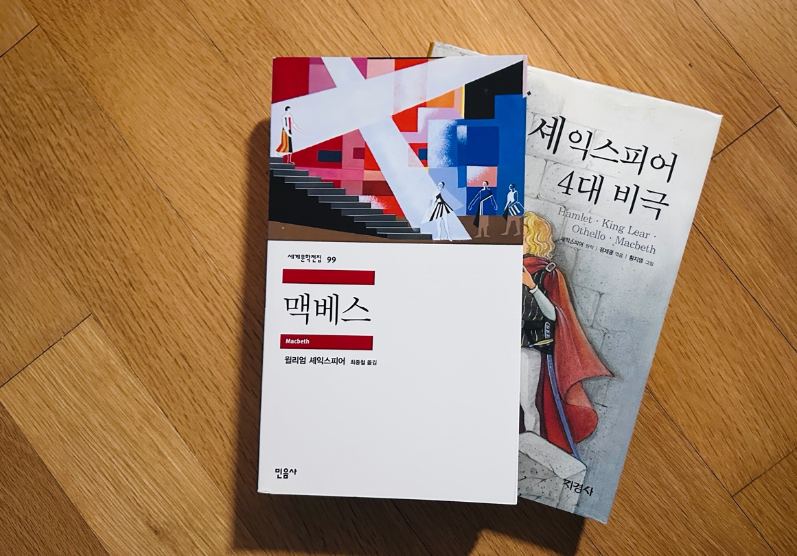
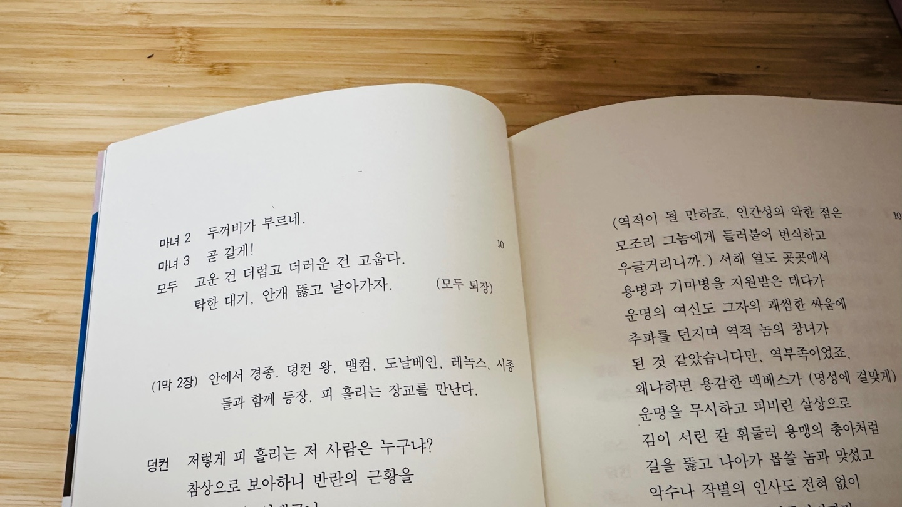

안녕하세요 라보엠입니다. 셰익스피어의 4대 비극 중 하나인 맥베스는 권력에 대한 야망과 그로 인한 비극을 다룬 작품으로, 현재 한국의 정치 상황과 묘하게 맞닿아 있는 듯합니다. 이 작품을 통해 우리는 현재의 정치 상황을 더 깊이 있게 이해하고, 앞으로 나아갈 방향에 대해 고민해볼 수 있을 것입니다.

맥베스 줄거리
맥베스는 스코틀랜드의 용맹한 장군으로, 전쟁에서 승리하고 돌아오던 중 세 마녀를 만나 자신이 왕이 될 것이라는 예언을 듣습니다. 이 예언은 맥베스와 그의 아내의 야망을 자극하고, 결국 그들은 현 국왕인 던컨을 살해하고 왕위에 오르게 됩니다. 하지만 권력을 얻은 후 맥베스는 불안과 공포에 시달리며 폭정을 펼치게 됩니다. 자신의 권력을 위협할 수 있는 모든 이들을 제거하려 하고, 이 과정에서 무고한 이들까지 희생됩니다. 결국 그의 폭정에 반발한 세력들에 의해 맥베스는 몰락하고 맙니다.
맥베스의 핵심 주제 중 하나는 권력이 인간을 어떻게 부패시키는지에 대한 것입니다. 맥베스는 처음에는 충직하고 용감한 장군이었지만, 권력에 대한 욕망이 그를 변화시킵니다. 이는 권력을 얻기 위해, 그리고 유지하기 위해 어떤 일도 서슴지 않는 정치인들의 모습과 유사합니다. 맥베스와 그의 아내는 권력을 얻은 후 끊임없는 죄책감과 불안에 시달립니다. 이는 정치인들이 자신의 행동의 윤리성에 대해 고민하고, 때로는 양심의 가책을 느끼는 상황과 비슷합니다.
이 작품에서는 예언이 맥베스의 운명을 결정했는지, 아니면 맥베스 자신의 선택이 그의 운명을 만들었는지에 대한 질문을 던집니다. 이는 정치인들의 행동이 외부 환경에 의해 결정되는 것인지, 아니면 그들 자신의 선택의 결과인지에 대한 현대적 질문과 연결됩니다.
현 한국 정국과의 연관성
2024년 12월, 한국은 윤석열 대통령의 비상계엄 선포와 그에 따른 탄핵 정국이라는 전례 없는 혼란을 겪고 있습니다. 이는 맥베스에서 다룬 권력의 남용과 그에 따른 몰락이라는 주제와 맞닿아 있습니다. 윤 대통령은 비상계엄을 선포하며 국회 봉쇄와 주요 정치인 체포를 지시했다는 증언이 나오는 등, 맥베스가 권력을 유지하기 위해 폭정을 펼친 것과 유사한 모습을 보였습니다.
맥베스의 주제 중 하나인 권력의 무상함은 현재 한국 정국에서도 여실히 드러나고 있습니다. 윤 대통령은 계엄 선포 후 불과 11일 만에 탄핵소추안이 가결되어 직무가 정지되었습니다]. 이는 맥베스가 권력을 얻은 후 급속도로 몰락하는 과정과 닮아 있습니다.
맥베스에서 주인공의 파멸을 가져온 것은 과도한 정치적 야망이었습니다. 현재 한국 정국에서도 여야 모두 정권 획득이라는 야망을 위해 치열한 수 싸움을 벌이고 있습니다. 이는 결국 국가와 국민의 이익보다는 정파적 이해관계가 우선시되는 상황을 초래하고 있습니다. 맥베스가 마녀들의 예언을 맹신한 것처럼, 현대 사회에서도 잘못된 정보나 가짜 뉴스에 현혹되는 경우가 많습니다. 이는 정치적 판단을 흐리게 하고 사회적 혼란을 가중시킬 수 있습니다.
고운 건 더럽고 더러운건 고웁다. 탁한 대기, 안개 뚫고 날아가자.
맥베스 1막 1장 11-12장

맺음말
셰익스피어의 맥베스는 400년이 넘은 작품이지만, 그 주제와 교훈은 현재 한국 정국에도 여전히 유효합니다. 권력의 무상함, 과도한 정치적 야망의 위험성, 정치인의 도덕적 책임 등은 오늘날 우리가 깊이 되새겨봐야 할 메시지입니다.
이 작품을 통해 우리는 현재의 정치 상황을 더 깊이 있게 이해하고, 앞으로 나아갈 방향에 대해 고민해볼 수 있을 것입니다. 맥베스가 보여주는 비극적 결말이 현실에서 반복되지 않기를 바라며, 이 작품은 우리에게 중요한 경고와 교훈을 전해주고 있습니다.
결국, 정치는 권력 그 자체가 목적이 되어서는 안 되며, 국민의 행복과 국가의 발전을 위한 수단이 되어야 한다는 점을 맥베스는 우리에게 강력하게 상기시킵니다. 현재의 한국 정치가 이러한 교훈을 깊이 새기고, 보다 나은 미래를 향해 나아갈 수 있기를 희망해 봅니다.